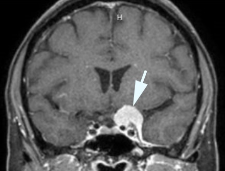

( of )
Correct: 0
Incorrect: 0
A 45 year old woman reported to her optometrist that vision appeared “clouded” in her left eye. She could not be sure how long that sensation had been present. Visual acuity was best-corrected to 20/20 (6/6, 1.0) in both eyes, but there was an afferent pupil defect in the left eye. The rest of the examination was normal except for these visual fields.
Where is the lesion?
Incorrect
Correct!
Surgical removal led to normalization of the visual fields and disappearance of the afferent pupil defect. Early diagnosis—before the tumor has exerted severe compression of the optic pathway—is critical to the visual outcome in this circumstance. Many patients show unilateral temporal hemianopic defects on formal perimetry. How will you know that the defect is “organic?” By finding an ipsilateral afferent pupil defect, as in this case.

You are looking at a temporal visual field defect in the left eye that has a discrete border aligned to the vertical meridian that passes through fixation. The visual field in the right eye is normal. The localizing feature here is the alignment along the vertical meridian, which places the lesion in the left optic nerve as it approaches the optic chiasm.
At that junction, axons derived from nasal retina have split off from those derived from temporal retina. Lesions there—no matter their nature—will preferentially damage the nasal axons to produce this unilateral temporal hemianopic visual field defect. If the lesion were situated farther posterior toward the optic chiasm, a temporal visual field defect would also be present in the other eye--a bitemporal hemianopia. This patient had a meningioma growing off the left clinoid process
Incorrect
Incorrect